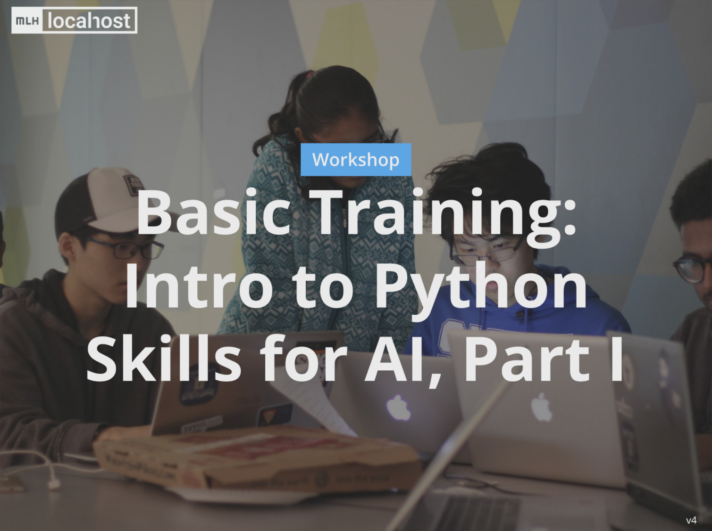

Online Learning
MLH:Learn - Build and Deploy your first Website - 2 hrs CPD

Even if the title implied Website deployment, this was mainly about basic html/css skills utilised in building a personal portfolio.
A very good oportunity to start on building html/css skills and a very informative session.
MLH:Learn Intro to Python skills for AI Part I and II - 4 hrs CPD
The title might be a bit misleading as there haven't been much activities involving Python for AI.
Nonetheless a good exercise in developing Python skills and practice programming.
MLH:Learn How to collaborate with GitHub - 2 hrs CPD
An introduction to collaborative software with the introduction of Git and GitHub.
Even if at times hard to follow the webinar made it clear that the GitHub web interface for version control and collaboration is much easier to use than Git console.
MLH:Learn - Javascript V8 Engine - 2 hrs CPD

A very interesting explanation of how JavaScript is processed by the browser and how the hew V8 Engine optimises code.
MLH:Learn - Build and Deploy a Full Stack Web App with AWS - 2 hrs CPD

This has been one of the most difficult to follow webinar of the lot. Many programs required installation: SQL, VSCode, Git, a subscription to AWS and access to Yelp API.
The best takeaway from the session was a free AWS Educate account for the year which gives access to some very interesting learning resources.